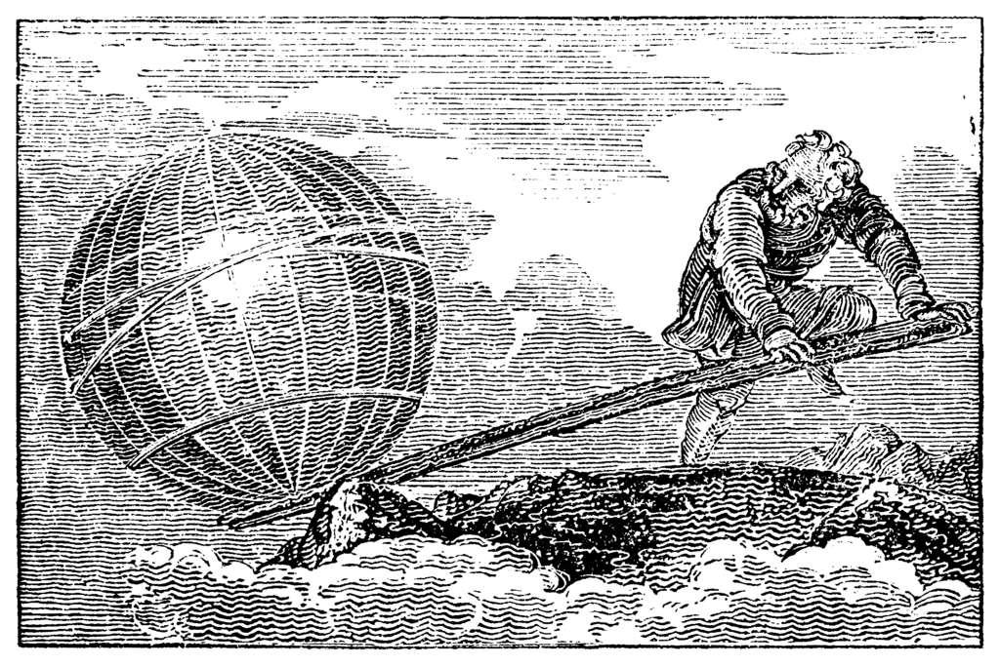

Shapes are a peculiar thing. To most, they are just an object. To Archimedes and others like him, they were a key element in understanding the universe. In Archimedes' life, he wrote many treatises and book documenting his wrok throughout the years. I had the pleasure of being able to read these works firsthand and understand the genius behind them.
Measurements of the Circle by Archimedes shows how Archimedes reached to the discovery of Pi, which was the ratio of the circumference to the diameter of a circle. While the exact number of Pi is difficult to calculate at the time, Archimedes was able to reach a close estimate of between 3 10/17 and 3 7/22. When rounded to the nearest hundreth place, we get a number of 3.14. The way Archimedes reached this number was creating a polygon with a fixed number of sides and then increasing them.
While Archimedes was already a master of objects in 2 dimensions, only having to deal with length and width, Archimedes increased upon this by studying objects of 3 dimensions, adding height to length and width. In his work named On Conoids and Spherioids, Archimedes focuses on finding the volume of objects. He deals with certain graphs of functions called conic sections and then making revolutions to create 3 dimesinonal object that contain volume within them.

Master of building and math, Archimedes also specialized in Physics with his work On the Equilibrium of Planes. In this work, Archimedes discusses centers of gravities and other plane figures. This work by his supports another work, Law of the Lever. Law of the the Lever goes into depth about how Archimedes was able to lift things that were way larger than he was. One of my favourite quotes of his that had blessed my ears were “Give me a stick, and I will lift the world.” He did in fact prove this by being able to lift a ship to the water with a lever.

However, Archimedes favorite discovery was one that he made in the Sphere and Cylinder. Archimedes studied deeply in regards to spheres and cylinders, finding out their surface areas and volumes. The one he loved out of every other equation was that the volume of a sphere is ⅔ the volume of a cylinder, in which the sphere is the same height as the cylinder. He loved it so much that he wished it to be inscribed upon his tombstone. We his humble students agreed. However, I wish these peaceful days of learning would never end.